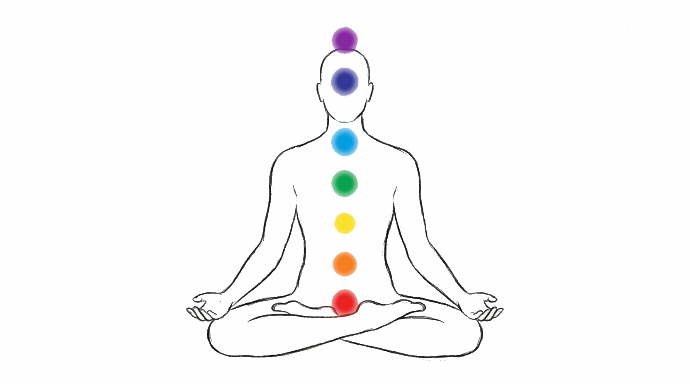

English
English Español
Español Italiano
Italiano Français
Français Deutsch
Deutsch Português
Português Русский
Русский 中文
中文 हिन्दी English Español Italiano Français Deutsch Português Русский 中文 हिन्दी
हिन्दी English Español Italiano Français Deutsch Português Русский 中文 हिन्दीПрокачайте свои энергетические центры, чтобы восстановить поток жизненной силы и обрести внутреннюю гармонию. Начните трансформацию прямо сейчас.

Слово «чакра» пришло из древнего санскрита и означает «колесо» или «вихрь». В индийской и тибетской традициях это энергетические центры тела, через которые протекает жизненная сила — прана. Первые упоминания о чакрах встречаются ещё в Ведах (около 1500 г. до н. э.), а позже их детально описали в трактатах по йоге и тантре.
Согласно этому учению, в человеке расположено 7 основных чакр — от основания позвоночника до макушки. Каждая из них отвечает за определённый аспект жизни: физическое здоровье, эмоции, интеллект, творчество, любовь, волю и связь с высшим «Я».
Когда чакры работают слаженно, энергия течёт свободно — вы чувствуете бодрость, ясность ума и внутреннюю опору. Если же баланс нарушен, возникают усталость, тревога, апатия или даже болезни. Активация чакр — это не мистика, а глубокая работа с собой, которая помогает вернуть цельность и гармонию в повседневной жизни.
ChakraFlow предлагает современный подход к этому древнему знанию, делая практику доступной каждому.
Это простая и глубокая практика, которая занимает всего 7 минут. Для каждой из 7 чакр мы подобрали уникальную звуковую частоту и визуальный образ. Вам достаточно переключаться между центрами и уделять каждой ровно минуту — слушать резонирующий звук и фокусироваться на изображении. Это мягко «настраивает» чакру, снимает блоки и возвращает естественный поток энергии без сложных медитаций и многолетней подготовки.
Узнайте больше о каждой чакре и её влиянии на вашу жизнь
Выберите чакру и начните практику